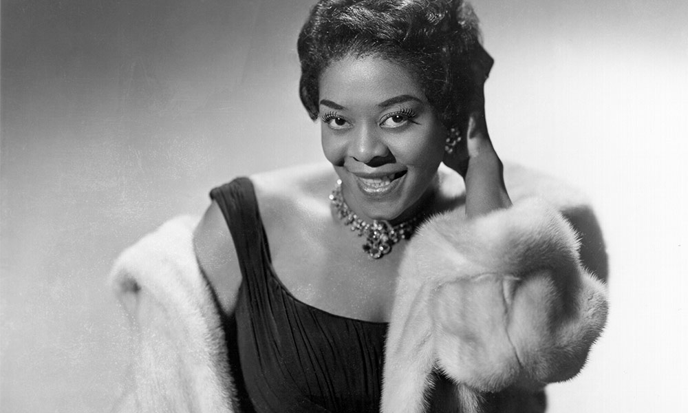

Musican Dinah Washingthon
The Woman who mesmerized millions with her beautiful voice.
The featured image for her amazing album Dinah Washingthon Essentials
- 1924- Born Ruth Lee Jones in Tuscaloosa, Alabama to Alice and Ollie Jones. She moves to Chicago as a child where she develops a love for singing in the church and playing the piano.
- 1939- Wins a talent competition at the age of 15 and begins performing at clubs.
- 1941-42- Has started to perform at Chicago clubs such as Dave's Café and the Downbeat Room of the Sherman Hotel.
- 1942- Friend takes her to see Billie Holiday perform at the Garrick Stage Bar. She managed to impress the owner of that bar by singing "I Understand by Mabel Wayne and lyrics by Kim Gannon" that he employed her.
- 1943- She made her recording debut for the Keynote label that December with "Evil Gal Blues".
- 1944- "Evil Gal Blues" and her follow-up album "Salty Papa Blues" made the Billboard "Harlem Hit Parade".
- 1945-46- Made a series of twelve recordings for Apollo Records and stayed with them until 1946.
- 1946- signed with Mercury Records as a solo artist where she released her single a version of Fats Waller's "Ain't Misbehavin'" which was another hit and it would be the indication of much more to come.
- 1948-1955- had 27 Rhythm and Blues top tep hits.
- 1950- Dinah Washington performed at the sixth famed Cavalcade of Jazz concert held at Wrigley Field in Los Angeles which was produced by Leon Hefflin, Sr. on June 25th.
- 1956 - She performed at the twelfth Cavalcade of Jazz also at Wrigley Field in Los Angeles on September 2nd.
- 1959- She had her first top ten pop hit, with a version of "What a Diff'rence a Day Made",[14] which made Number 4 on the US pop charts.
- early 1960- Washington occasionally performed on the Las Vegas Strip.
- 1963- Died on December 14th at the age of 39.
"She was a good friend of mine, you know. She was great. She used to just come in with two suitcases in Vegas without being booked. And she'd just come in and put the suitcases down. And she'd say "I'm here, boss". And she'd stay as long as she wanted. And all the kids in all the shows on the Strip would come that night. They'd hear that she's in town and it would be packed just for her performance"
- Tony Bennett
To learn more about this amazing musician please visit her page on wikipedia to continue reading